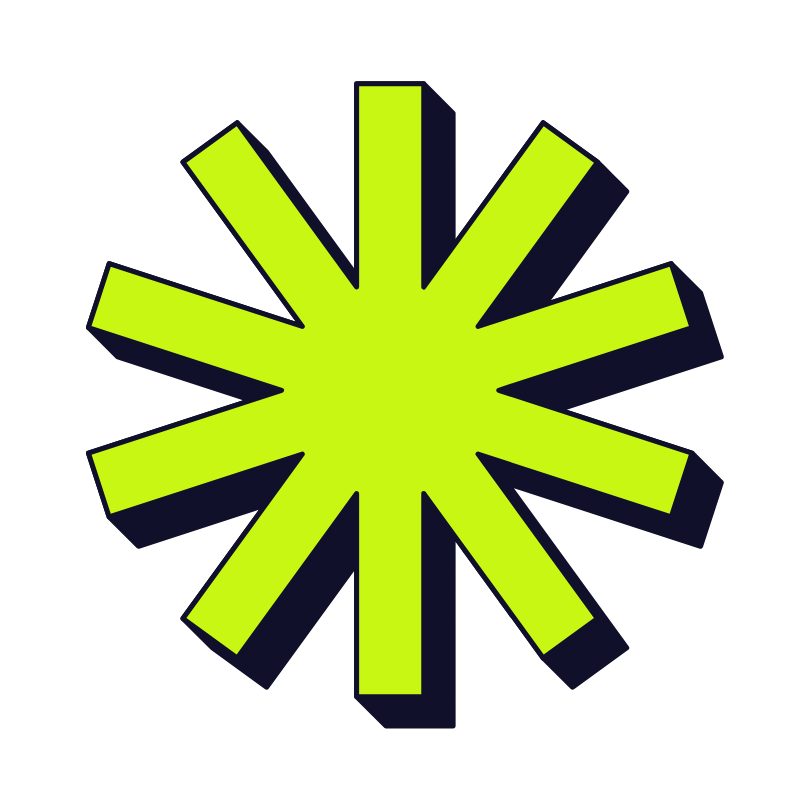
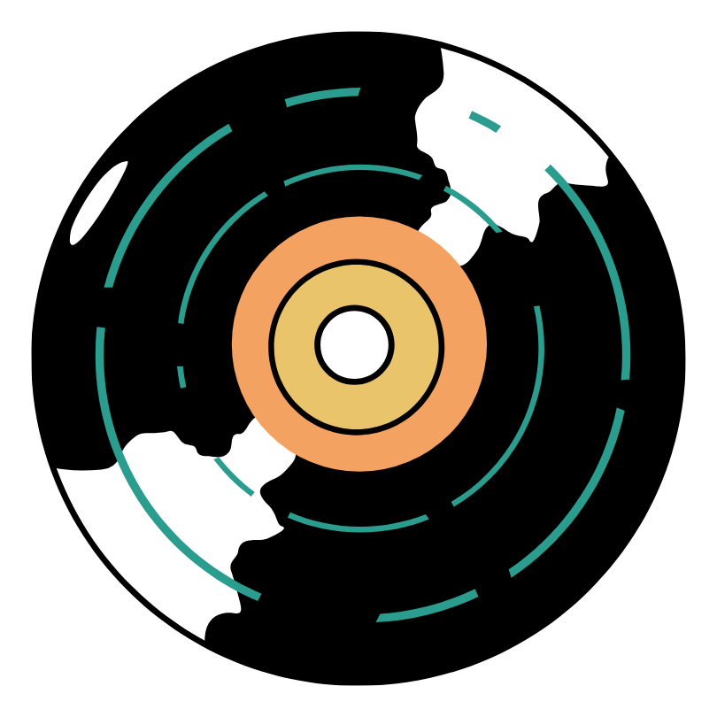
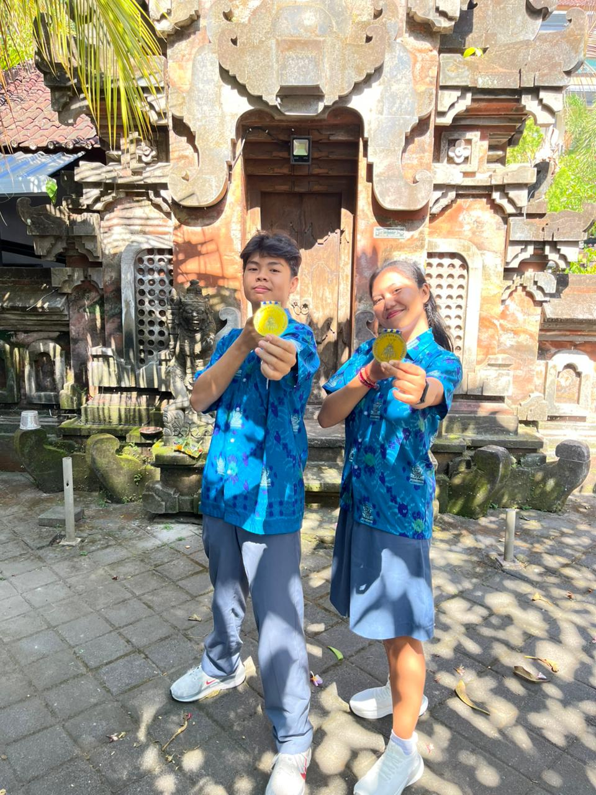
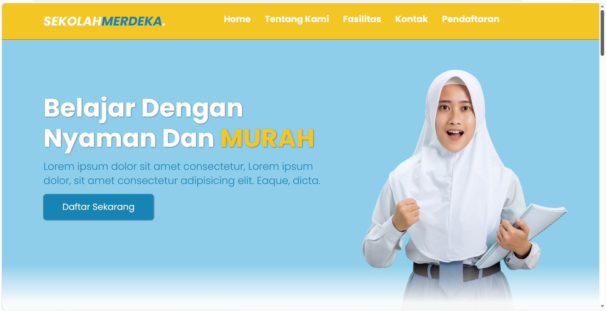
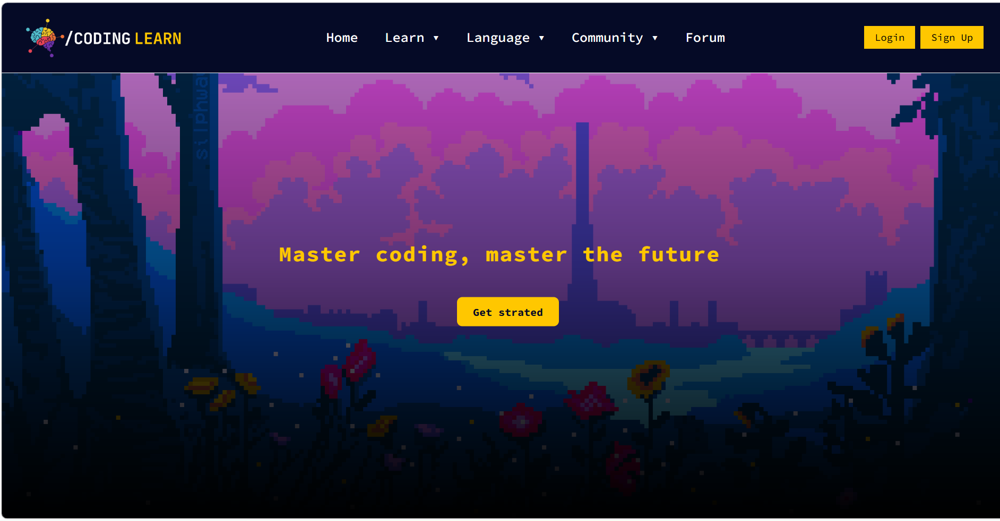
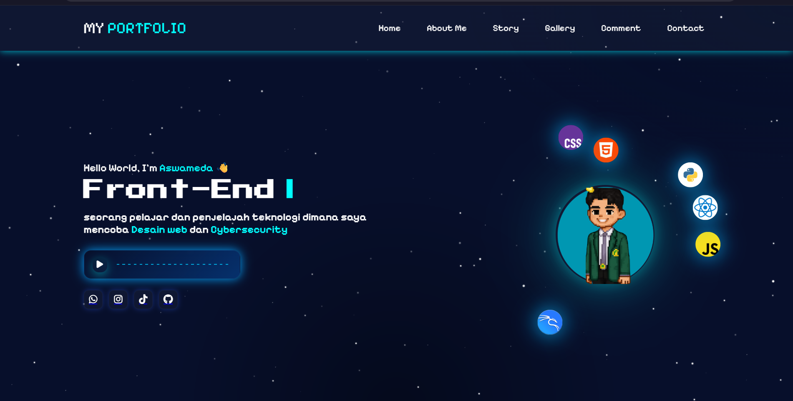

Cerita di Balik Layar
Dari sekadar rasa penasaran jadi passion. Ini perjalanan saya di dunia development, lengkap dengan skill, pengalaman, dan hal-hal yang saya percaya.

Perjalanan awal mengenal coding
Halo, namaku Aswameda atau aku punya sebutan lain ya itu HEXS. Nama HEXS sendiri diambil dari Kode warna yaitu hexadecimal atau biasa ditulis hex, saya adalah seorang pelajar yang mulai coding sejak SMP yang dimana saya waktu itu penasaran "apa itu coding ?" ini juga karena kakak saya kuliah IT.


Mulai Mendalami
Saat masih SMP, saya konsisten belajar HTML dan CSS untuk membuat website sederhana, sambil mempelajari Flexbox, Grid, dan masih banyak lagi.
Mengikuti Lomba
Pertama kali mengikuti lomba saat SMA bersama partner saya, dan kami berhasil meraih Juara 1. Tidak lama setelah itu, kami mengikuti lomba kedua dan kembali meraih Juara 1.
Saat Ini
Saat ini saya sedang menempuh pendidikan yang lebih tinggi, sambil tetap melanjutkan belajar desain website salah satunya mulai memakai Tailwind CSS.
Setiap Project, Setiap Pelajaran Baru
Projek Pertama
Ini website pertama saya yang lengkap. Masih sederhana, tapi dari sini saya belajar menyusun komponen-komponen kecil menjadi satu website yang utuh — pondasi paling dasar sebelum naik ke yang lebih kompleks.


Website Ramen
Project lomba berikutnya, di mana saya membangun sebuah website bertema ramen. Tantangannya beda: saya belajar membangun website sesuai konsep yang sudah ditentukan — dari riset tema sampai menyusun visualnya biar nyambung dengan cerita yang ingin disampaikan.
